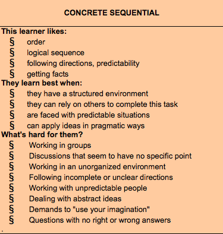
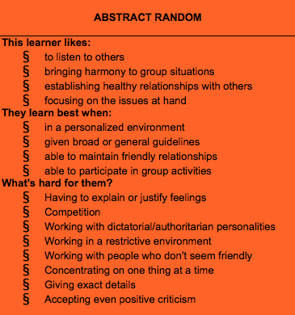

Week Nine Cultural Blog
Gregorc Thinking Style
- Concrete Sequential: 36
- Abstract Sequential: 24
- Abstract Random: 32
- Concrete Random: 21
I have researched my thinking style to notice that it is pretty accurate. I scored highest for concrete sequential and abstract random.
I'm not a very clean and organized person when it comes to my belongings, but I enjoy and benefit from routine, direction, and structure. I have noticed that I have been struggling with working in groups, I'm not really a 'team' oriented type of person, but I am really working on it.
I agree that I like to listen to others and establish healthy relationships. I also like be in and maintain a peaceful enviorment. If there is confrentation, I usually confront it and try to solve the issue so the group or relationship can continue working. I definitely work better when given at least a little direction. I hate competition and feeling restricted.
It was interesting to research my thinking style, I hope having this understanding will help me in my progress at DBC.
Consider your experience in Phase 0 to this point. What has been the biggest struggle for you? Is it related to the way you think and learn or is it related to something else?
My biggest struggle has been finding the time to pair up, but also work in complete harmony while pairing. I feel like every time I pair either one person is doing more than the otherm as if we are not comepletely using the roles of navigator and driver. I would really like to work on this. I had paired with only one person who was completely organized with this process, and I'd like to practice it more. My learning style is highly kinestetic and visual, when people only speak the information to me, I have trouble processing it. When it is written in front of me or I am reading it and rewriting it, I absorb the most.
comments powered by Disqus